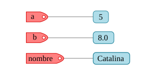
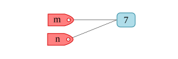

2. Variables, operadores y expresiones#
Al ser un lenguaje de alto nivel, Python dispone de los tipos de datos elementales en cualquier lenguaje de programación, pero además incluye estructuras de datos más complejas y con altas prestaciones que facilitan en muchos aspectos la tarea del programador.
Python es un lenguaje de tipado dinámico en el que no hace falta declarar el tipo de dato que asignará a una variable, de igual manera una variable puede cambiar de tipo conforme la ejecución del programa, por ello se debe tener cuidado con la sintaxis para definir cada tipo de dato.
2.1. Variables#
En Python todo lo que creamos son objetos y las variables son referencias a esos objetos, las variables se definen por asignación utilizando el signo =, por ejemplo:
a = 5
b = 8.0
nombre = "Catalina"
Piensa el proceso de asignación como la acción de etiquetar las direcciones de memorias en donde se almacenan los objetos de Python, tal como se esquematiza en la figura.

Veamos ahora otro ejemplo de definición de variables:
m = 7
n = m
En este caso primero definimos la variable m que será una etiqueta del objeto 7, cuando se hace la asignación n = m se coloca otra etiqueta al objeto 7.

Se puede verificar que ambas variables refieren al mismo objeto:
print( id(m) )
print( id(n) )
140724764223472
140724764223472
La función id devuelve el identificador del objeto, cada identificador es único durante el ciclo de vida de cada objeto.
Para nombrar las variables se deben tener en cuenta las consideraciones que a continuación se describen.
Los nombres de variables sólo deben contener letras, números y guiones bajos.
esfuerzo_axial = 150e6
diametro_01 = 30e-3
nombre = "Ximena"
El nombre de una variable puede comenzar con una letra o un guión bajo, pero no con un número
Los siguientes nombres de variables son válidos:
temperatura = 35
_deformacion_unitaria = 300e-6
Pero este no, puesto que comienza con un número:
30_presion = 30e3
File "<ipython-input-8-75b70e022a72>", line 1
30_presion = 30e3
^
SyntaxError: invalid decimal literal
Los espacios no están permitidos en los nombres de variables. Sí necesitas nombrar una variable con dos o más palabras, puedes utilizar el guión bajo para separar las palabras.
modulo de elasticidad = 70e9 # no es válido utilizar espacios
File "<ipython-input-9-67a55b9eeb54>", line 1
modulo de elasticidad = 70e9
^
SyntaxError: invalid syntax
modulo_de_elasticidad = 70e9 # se puede utilizar el guion bajo
Evita utilizar palabras claves/reservadas y nombres de funciones y/o cualquier otra palabra que Python utilice.
Por ejemplo, observa que pasa si intentamos utilizar como nombre de variable la palabra reservada lambda:
lambda = 1500
File "<ipython-input-14-44b09368e0cc>", line 1
lambda = 1500
^
SyntaxError: invalid syntax
Python nos manda un SyntaxError. La lista de palabras reservadas del lenguaje que no puedes utilizar como nombre de variable la puedes listar con las siguientes instrucciones:
import keyword
print(keyword.kwlist)
['False', 'None', 'True', 'and', 'as', 'assert', 'async', 'await', 'break', 'class', 'continue', 'def', 'del', 'elif', 'else', 'except', 'finally', 'for', 'from', 'global', 'if', 'import', 'in', 'is', 'lambda', 'nonlocal', 'not', 'or', 'pass', 'raise', 'return', 'try', 'while', 'with', 'yield']
Ademas de las palabras reservadas del lenguaje, evita utilizar los nombres de funciones o clases built-in de Python, esos nombres los puedes ver tecleando las siguientes instrucciones:
import builtins
print( dir(builtins) )
['ArithmeticError', 'AssertionError', 'AttributeError', 'BaseException', 'BlockingIOError', 'BrokenPipeError', 'BufferError', 'BytesWarning', 'ChildProcessError', 'ConnectionAbortedError', 'ConnectionError', 'ConnectionRefusedError', 'ConnectionResetError', 'DeprecationWarning', 'EOFError', 'Ellipsis', 'EnvironmentError', 'Exception', 'False', 'FileExistsError', 'FileNotFoundError', 'FloatingPointError', 'FutureWarning', 'GeneratorExit', 'IOError', 'ImportError', 'ImportWarning', 'IndentationError', 'IndexError', 'InterruptedError', 'IsADirectoryError', 'KeyError', 'KeyboardInterrupt', 'LookupError', 'MemoryError', 'ModuleNotFoundError', 'NameError', 'None', 'NotADirectoryError', 'NotImplemented', 'NotImplementedError', 'OSError', 'OverflowError', 'PendingDeprecationWarning', 'PermissionError', 'ProcessLookupError', 'RecursionError', 'ReferenceError', 'ResourceWarning', 'RuntimeError', 'RuntimeWarning', 'StopAsyncIteration', 'StopIteration', 'SyntaxError', 'SyntaxWarning', 'SystemError', 'SystemExit', 'TabError', 'TimeoutError', 'True', 'TypeError', 'UnboundLocalError', 'UnicodeDecodeError', 'UnicodeEncodeError', 'UnicodeError', 'UnicodeTranslateError', 'UnicodeWarning', 'UserWarning', 'ValueError', 'Warning', 'WindowsError', 'ZeroDivisionError', '__IPYTHON__', '__build_class__', '__debug__', '__doc__', '__import__', '__loader__', '__name__', '__package__', '__spec__', 'abs', 'all', 'any', 'ascii', 'bin', 'bool', 'breakpoint', 'bytearray', 'bytes', 'callable', 'chr', 'classmethod', 'compile', 'complex', 'copyright', 'credits', 'delattr', 'dict', 'dir', 'display', 'divmod', 'enumerate', 'eval', 'exec', 'filter', 'float', 'format', 'frozenset', 'get_ipython', 'getattr', 'globals', 'hasattr', 'hash', 'help', 'hex', 'id', 'input', 'int', 'isinstance', 'issubclass', 'iter', 'len', 'license', 'list', 'locals', 'map', 'max', 'memoryview', 'min', 'next', 'object', 'oct', 'open', 'ord', 'pow', 'print', 'property', 'range', 'repr', 'reversed', 'round', 'set', 'setattr', 'slice', 'sorted', 'staticmethod', 'str', 'sum', 'super', 'tuple', 'type', 'vars', 'zip']
Los nombres de variables son case sensitive, es decir, se distingue entre mayúsculas y minúsculas.
No es lo mismo definir una variable nombre que otra llamada NOMBRE:
NOMBRE = "Ana"
nombre = "Paola"
nombre == NOMBRE
False
Los nombres de variables deberían ser cortos pero descriptivos.
Por ejemplo, si estamos almacenando un valor que corresponde a un diámetro, suele ser más conveniente y recomendable utilizar diametro en lugar de d como nombre de variable.
Puedes encontrar más recomendaciones sobre cómo nombrar variables en el PEP 8 – Style Guide for Python Code
2.2. Tipos de datos básicos#
Al ser un lenguaje de alto nivel, Python dispone de los tipos de datos elementales en cualquier lenguaje de programación, pero además incluye estructuras de datos más complejas y con altas prestaciones que facilitan en muchos aspectos la tarea del programador. A continuación, se describen los tipos de datos básicos en Python.
2.2.1. Enteros (int)#
Los enteros son un tipo de dato básico en cualquier lenguaje de programación. En Python para definir un valor entero se debe colocar el número sin ningun punto decimal, por ejemplo:
a = 1
type(a)
int
En el código anterior la función type nos sirve para identificar la clase/tipo de un objeto.
De manera explícita se puede definir un valor entero utilizando la función int:
m = 5.0
n = int(5.0)
type(m), type(n)
(float, int)
Observa que cuando colocamos un punto decimal, automáticamente la cantidad deja de ser un entero y pasa a ser un flotante.
2.2.2. De coma flotante (float)#
Los valores de coma flotante son cantidades numéricas que incluyen a todos los reales. Para que Python reconozca un valor numérico como de tipo float se debe adicionar el punto decimal o bien utilizar la función float para hacer la indicación de manera explícita, por ejemplo:
w = 5.3
x = 10.0
y = 9.
z = float(8)
type(w), type(x), type(y), type(z)
(float, float, float, float)
2.2.3. Booleanos (bool)#
Las variables booleanas sólo pueden adoptar dos valores: verdadero (True) o falso (False). Un valor booleano se puede definir directamente a partir de las constantes True y False:
a = True
b = False
type(a), type(b)
(bool, bool)
O bien a partir de otros objetos Python al aplicar la función bool:
bool("hola")
True
bool([])
False
bool(0)
False
bool(10)
True
En general, la función bool devolverá un False cuando se tienen objetos nulos o vacíos, en cualquier otro caso devolverá el valor True. Usualmente los valores booleanos siempre van a provenir de una comparación entre objetos, para efectuar esas comparaciones se utilizan los operadores relacionales.
2.2.4. Cadenas de caracteres#
Las cadenas de caracteres son un tipo de dato que contiene una secuencia de símbolos, mismos que pueden ser alfanúmericos o cualquier otro símbolo propio de un sistema de escritura. En Python las cadenas de caracteres (habitualmente denominadas como strings) se definen utilizando comillas dobles o simples. Observa los siguientes ejemplos:
saludo = "Hola"
type(saludo)
str
nombre = 'Amelia'
type(nombre)
str
En un capítulo posterior se abordan de forma profusa las cadenas de caracteres, sus métodos y operaciones que pueden realizarse.
2.3. Operadores aritméticos#
En cualquier lenguaje de programación los operadores aritméticos permiten realizar las operaciones aritméticas básicas con tipos numéricos, además de que permiten formar expresiones compuestas. En la Table 2.1 se muestran los operadores aritméticos disponibles en Python y la operación que realizan.
Operación |
Operador |
|---|---|
Suma |
|
Resta |
|
Multiplicación |
|
División |
|
División entera |
|
Módulo |
|
Exponenciación |
|
Enseguida se muestran operaciones de ejemplo con cada uno de los operadores aritméticos listados anteriormente:
1000 + 2000 # suma
3000
500 - 350 # resta
150
352 * 34 # multiplicación
11968
3/8 # división
0.375
10 // 3 # división entera
3
10 % 3 # módulo
1
10**3 # exponenciación
1000
2.4. Operadores relacionales#
Los operadores relacionales (o de comparación) nos permite efectuar comparaciones entre objetos de Python. El resultado de una comparación es un valor booleano True o False. A continuación se ejemplifican los operadores relacionales que podemos utilizar en Python:
# "igual que"
1 == 1
True
# "diferente a"
"a" != "a"
False
# "mayor que"
10 > 5
True
# "menor que"
5 < 1
False
# "mayor o igual que"
30 >= 30
True
# "menor o igual que"
20 <= 10
False
Hay que tener cuidado y verificar que al hacer comparaciones los objetos implicados sean compatibles. Cuando los objetos no son comparables Python devolverá un TypeError, por ejemplo:
"a" > 10
---------------------------------------------------------------------------
TypeError Traceback (most recent call last)
Input In [20], in <cell line: 1>()
----> 1 "a" > 10
TypeError: '>' not supported between instances of 'str' and 'int'
[0,4] < (1,2)
También podemos encadenar comparaciones con instrucciones del tipo a < b < c, donde ese < puede ser cualquier operador relacional. Por ejemplo:
1 < 2 < 3
True
El True devuelto en la línea anterior implica que tanto 1 < 2 como 2 < 3 son condiciones que se cumplen. Veamos otros ejemplos:
10 > 10 > 3
False
3 == 3 >= 2
True
Este encadenamiento de operadores relacionales puede suplirse con el uso de operadores lógicos.
2.5. Operadores lógicos#
Los operadores lógicos nos sirven para realizar operaciones de lógica booleana entre valores de tipo bool. En Python podemos utilizar los operadores lógicos and, or y not. En la Table 2.2 se muestra la tabla de verdad para los valores lógicos.
X |
Y |
X |
X |
|
|---|---|---|---|---|
True |
True |
True |
True |
False |
True |
False |
False |
True |
False |
False |
True |
False |
True |
True |
False |
False |
False |
False |
True |
Observemos los siguientes ejemplos:
True and True
True
True or False
True
not True
False
En un programa, la forma más habitual de uso de los operadores lógicos es encadenar múltiples comparaciones realizadas mediante los operadores relacionales. Debemos recordar que de una comparación resulta, invariablemente, un valor lógico True o False.
En el siguiente ejemplo se verifica si 1 es igual a 1 (verdadero) y si 2 es mayor a 1 (verdadero). Dado que ambas condiciones son verdaderas, entonces al encadenar ambas comparaciones con el operador and, resulta un valor lógico True, de acuerdo con la tabla de verdad mostrada anteriormente.
(1 == 1) and (2 > 1)
True
El operador lógico or podemos utilizarlo cuando una de ambas comparaciones debe ser cierta. Por ejemplo:
(0 != 0) or (10 > 20)
False
En la línea anterior, ambas comparaciones son falsas, entonces al encadenarlas con el operador or devuelven un valor lógico False. Si al menos una de las comparaciones es cierta, entonces se devuelve un True, tal como se muestra en el siguiente ejemplo:
(0 != 0) or (10 < 20)
True
El uso habitual de los operadores lógicos es el encadenamiento de comparaciones, para tomar decisiones en el flujo del programa. Por ejemplo, si piensa en el caso de una línea de código que únicamente deberá ejecutarse en el caso de que se cumplan, sin excepción, dos condiciones, usando comparaciones en conjunto con el operador and y una estructura de bifurcación (algo que se revisará en secciones posteriores) se puede crear este tipo de programa.
2.6. Expresiones#
Las expresiones son combinaciones de constantes, variables, operadores, paréntesis y llamadas a funciones, que son evaluadas y producen un resultado. Son fundamentales porque constituyen la base para realizar cálculos o tomar decisiones en un lenguaje de programación. Podemos distinguir, generalmente, tres tipos de expresiones:
Expresiones aritméticas
Expresiones relacionales
Expresiones lógicas
Las expresiones aritméticas utilizan únicamente operadores aritméticos combinados con cantidades numéricas (enteras o de coma flotante) y son utilizadas para evaluar fórmulas o expresiones algebraicas. Observa por ejemplo lo siguiente:
x = 10
y = 3*x**2 + 3*x - 2
print(y)
328
El valor que guardamos en la variable y es lo que resulta de evaluar la expresión \(3x^2 + 3x - 2\) en \(x=10\).
Es importante tener cuidado con la precedencia de los operadores al momento de crear una expresión aritmética, veamos un ejemplo:
a = 5
b = 3
c = 2
r1 = a / b + c
r2 = a / (b + c)
print("r1 =", r1)
print("r2 =", r2)
r1 = 3.666666666666667
r2 = 1.0
La diferencia en las expresiones anteriores, asignadas a r1 y r2, radica en el uso del paréntesis. Mientras que para r1 se está evaluando la expresión:
Para r2 se evalúa:
Los paréntesis en la expresión asignada a r2 indican que su contenido deberá evaluarse primero y posteriormente el resto de las operaciones aritméticas de acuerdo con la siguiente lista de precedencia de operadores (ordenada de mayor a menor prioridad):
Paréntesis:
()Exponenciación:
**.Multiplicación, división y módulo:
*,/,//,%.Suma y resta:
+,-.
Si se tiene una expresión con dos o más operadores con la misma prioridad, entonces se comenzará evaluando de izquierda a derecha. Por ejemplo:
3 / 5 * 2
1.2
En la expresión anterior, dado que los operadores * y / tienen la misma prioridad, entonces se evalúa primero el que está ubicado más a la izquierda (/), es decir:
Para forzar que primero se evalúe el operador * entonces tendríamos que hacer uso de los paréntesis:
3 / (5 * 2)
0.3
Lo cual implicaría primero evaluar lo que está entre paréntesis y luego el resto, es decir:
Las expresiones lógicas están formadas, típicamente, por operadores relacionales y lógicos, en conjunto con objetos de cualquier tipo de dato. Estas expresiones nos sirven para hacer comparaciones y combinarlas mediante los operadores lógicos, con la finalidad de tomar decisiones en el flujo de ejecución de un programa. Veamos una expresión de este tipo:
3 < 10 and 10 == 10
True
Observa que primero se hacen las comparaciones y luego se aplica el operador lógico and. Las expresiones lógicas pueden contener también expresiones aritméticas, por ejemplo:
1 + 2 + 3 > 10 and 5 + 3 > 7
False
En la expresión anterior, tienen prioridad los operadores aritméticos sobre los relacionales, y estos sobre los lógicos. El proceso de evaluación sería como se muestra:
Así pues, una lista completa de prioridad de operadores se muestra enseguida:
Paréntesis:
()Exponenciación:
**.Multiplicación, división y módulo:
*,/,//,%.Suma y resta:
+,-.Operadores relacionales:
==,!=,>,<,>=,<=.Operadores lógicos:
not,and,or.
2.7. Ejemplos#
Escribe un programa que calcule y muestre la raíz cuadrada de un número n dado.
A continuación, se muestra una manera de resolver lo anterior:
n = 81
rc = (n)**(1/2)
print(f"La raíz cuadrada de {n} es {rc}")
La raíz cuadrada de 81 es 9.0
Observa que lo que estamos haciendo es evaluar la expresión:
En el entendido de que es equivalente a la raíz cuadrada de un número. Si quisiéramos hacer nuestro programa un poco más interactivo podríamos utilizar la función input, la cual recibe por consola un valor en forma de una cadena de caracteres, veamos el ejemplo:
n = float( input("Ingresa un número: ") )
rc = (n)**(1/2)
print(f"La raíz cuadrada de {n} es {rc}")
Ingresa un número: 225
La raíz cuadrada de 225.0 es 15.0
En el código anterior la función float nos sirve para convertir la cadena de caracteres en un valor numérico, al cual se le pueda operar matemáticamente. Por ahora no te preocupes demasiado por la función input, en capítulos posteriores hablaremos con mayor detenimiento sobre esta.
La siguiente expresión nos permite aproximar el valor de \(\pi\) hasta las millonésimas:
Escribe la expresión correspondiente en Python
En Python podemos escribir dicha expresión como:
pi = 3 + (8/60) + (29/60**2) + (44/60**3)
pi
3.1415925925925925
Es importante tener en cuenta que en este caso los paréntesis no son realmente necesarios, observa:
pi = 3 + 8/60 + 29/60**2 + 44/60**3
pi
3.1415925925925925
Sin embargo el uso de estos suele aportar una mayor legibilidad a las expresiones matemáticas que estamos escribiendo. Hay que tener mucho cuidado con los paréntesis y la precedencia de los operadores, veamos el ejemplo siguiente:
pi = 3 + (8/60) + (29/60)**2 + (44/60)**3
pi
3.7613148148148148
Observa que la expresión colocada ya no corresponde con la aproximación de \(\pi\) descrita con anterioridad, sino más bien correspondería a:
Escribe un programa que evalúe la siguiente expresión para un valor dado de \(x\)
x = 2 # valor de x
y = x**(1/2) / (x**2 + 1) # expresión
print(y) # mostramos el valor de la expresión evaluada
0.282842712474619
Observa que en el código anterior los paréntesis son necesarios, dado que si prescindimos por ejemplo del primer paréntesis:
x**1/2 / (x**2 + 1)
0.2
Esto equivaldría a tener la expresión:
Puesto que primero se evaluaría el exponente antes que el operador de división.
La energía cinética de una partícula está dada por:
Desarrolle un programa para evaluar la energía cinética para cuando \(m=0.5 \,kg\) y \(v=2.5 \, m/s^2\)
m = 0.5
v = 2.5
K = 1/2 * m * v**2
print("K = ", K)
K = 1.5625
2.8. Ejercicios#
Crea un programa que dado un número n calcule y muestre la raíz cúbica de dicho número.
Realiza un programa que evalúe la siguiente expresión:
Crea un programa que evalúe y muestre el valor de la siguiente expresión:
Crea un programa que evalúe y muestre el valor de la siguiente expresión:
Observa el siguiente código:
a = 10
b = 20
c = 5
a = b + c
c = b + a
b = a + c
print(a, b, c)
¿Qué valores tendrán a, b y c al mostrarlos? Procura realizarlo primero de forma manual y enseguida comprueba tus resultados ejecutando el código anterior.
El área de un círculo se determina utilizando la siguiente fórmula:
Siendo \(r\) el radio del círculo. Escribe un programa para calcular y mostrar el área de un círculo dado su radio.
Para convertir de grados Fahrenheit a Celsius se puede utilizar la siguiente expresión:
Desarrolle un programa para calcular y mostrar la temperatura equivalente en grados Celsius, dada una temperatura en grados Fahrenheit.